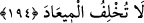

Her kim gelmek isterse gelsin, ne dilerse söylesin mâni olunmaz,
Çünkü Hak dergâhında kibir ve naz, bekçi ve kapıcı bulunmaz.
Allah Teâlâ duâlarımızı kabul buyurup, hakkımızda hayırlı olan şeyleri dünyada da
âhirette de ihsân ederek bütün ümid ve niyâzlarımızı gerçekleştirsin.
194. Rabbimiz! Bize, peygamberlerin vasıtasıyla vâdettiklerini de ikrâm et ve
kıyâmet gününde bizi rezil-rüsvay etme; şüphesiz sen vâdinden caymazsın!
“Ey Rabbimiz bize peygamberlerin vâsıtasıyla” dili ile ya da elçilerini tasdik
ettiğimiz takdirde vermeyi “vâdettiğin” sevap ve değerli şeyleri “ver. Kıyâmet
gününde” kıyâmetin muktezâsından olan dehşetengiz hallerden koruyarak “bizi rezil ve
rüsvây etme,” yüzüstü bırakma. “Sen, verdiğin sözden caymazsın!”
Bütün bu duâlar ve bu duâları tekrarlamaktaki ileri derecedeki tazarrû ve isteyiş,
Allah’ın vâdinden döneceği husûsunda bir endişeleri olduğundan değildir. Bilakis,
elçilerin emrine uymakta gösterdikleri kusurdan veya kötü bir âkıbetleri
olabileceğinden dolayı bu vâd-i ilâhiye muhâtap olan bahtiyarlardan olamayacakları
endişesinden kaynaklanmaktadır. Bütün bu duâların nihâî çıkış noktası, Allah’ın
kendilerini içinde bulundukları durumda daha da sâbitleştirmesi isteği, yahud da huşû
ve kullukta mübâlağadır.
“Bizi kıyâmet gününde rezil ve rüsvay etme!” kavl-i şerîfi ile “Allah katından
onlara hiç hesaplamadıkları şeyler beliriverir.” (ez-Zümer, 39/47) kavl-i şerîfi
benzerlik arzetmektedir. Çünkü, insanoğlu belki hak bir inanç; sâlih bir amel üzere
olduğunu zanneder, ama kıyâmet günü, inancının yanlış; amelinin de günah olduğu ortaya
çıkar. O anda insanda büyük bir utanç, tam bir pişmanlık ve şiddetli bir üzüntü hâsıl
olur. İşte bu ruhânî azaptır. Ve bu azap cismânî azaptan daha şiddetlidir. Bunun böyle
olduğunu gösteren delillerden biri, Cenâb-ı Hakk’ın mü’min kullarının bu beş çeşit
duâda birtakım şeyler istediğini hikâye etmesidir. Buna göre akıllı mü’minlerin ilk
istekleri, cismânî azaptan kurtulmaktır. -ki “bizi ateş azabından koru” kavl-i şerîfi bu
isteği yansıtır. Son istekleri ise ruhânî azaptan kurtulmaktır. “Kıyâmet günü bizi rezil
perişan etme” kavl-i şerîfi de bunu yansıtır. Bu, söylediklerimizin doğru olduğuna bir
delildir. Nitekim “Allah’dan ayrı kalmak, ateşte yanmaktan daha sıkıntılıdır” diye bir
söz vardır. Mevlânâ Celâleddîn Rûmî (k.s.) şöyle der:
Dünyanın derdi vardır sıkıntısı zamânın
Ama en zoru gaflet ve uzağında kalmak Mevlâ’nın.